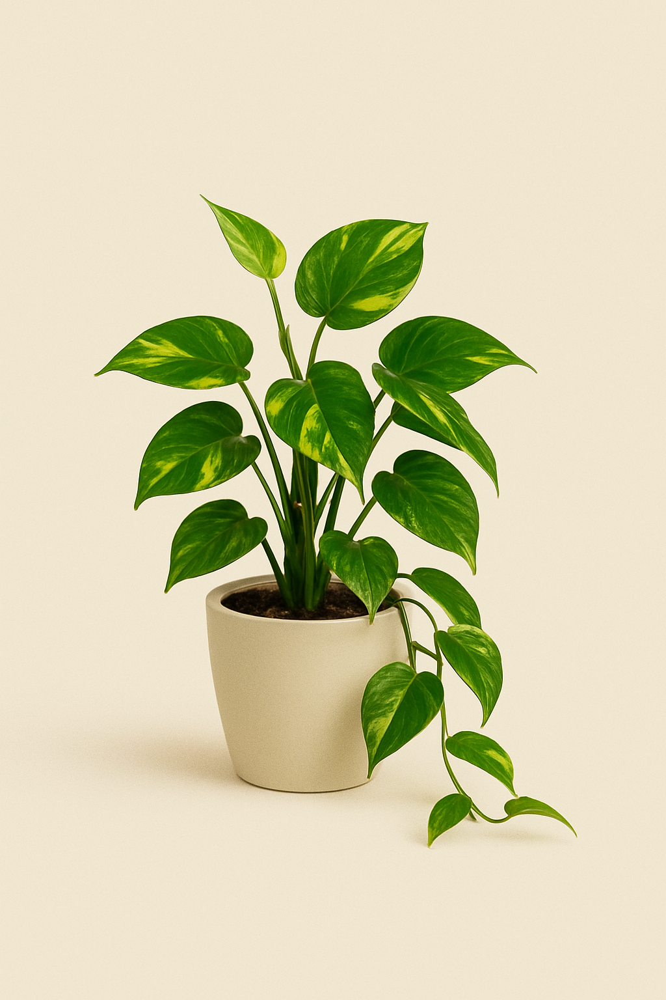

Jiboia
Nome científico: Epipremnum aureum
☠️ Tóxica para gatos: Sim
☀️ Luz ideal: Luz média ou difusa
üíß Rega: Baixa
A Jiboia é uma das plantas mais resistentes e versáteis para interiores. Suas folhas em formato de coração com variegado verde e amarelo trazem vida e elegância a qualquer ambiente.
Ideal para vasos suspensos ou como trepadeira, ela se adapta bem a diferentes níveis de luz indireta e demanda pouca manutenção. Pode ser cultivada em solo bem drenado ou diretamente na água.
Importante: a Jiboia é tóxica para gatos e cães se ingerida, podendo causar irritação oral e digestiva. É recomendável mantê-la fora do alcance dos pets.
üí° Curiosidade
É uma das plantas mais fáceis de cuidar e pode crescer metros em ambientes internos. Vai bem em vasos suspensos ou como trepadeira com tutor.
← Voltar para Plantas